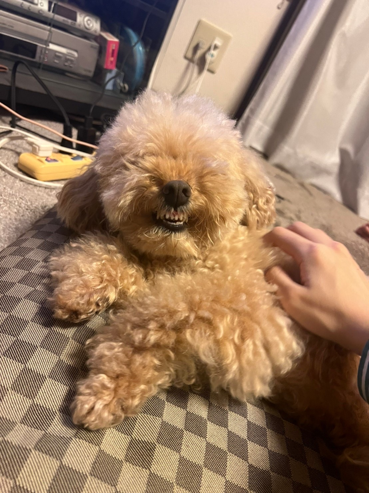
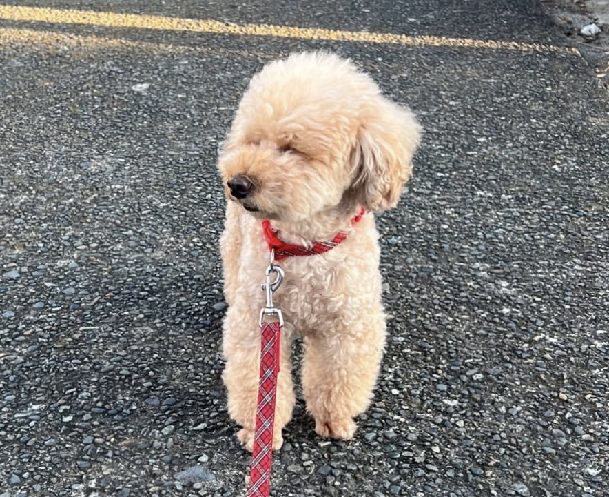

作品タイトル：コースター


置いたコップや飲み物が倒れないコースター これを作った理由
コップに飲み物を入れて机に置いたときの水滴が気になったため、最近コースターを買った。 使っているときにパソコンで課題をするときなど、隣に置いておくとコップを倒してしまいそうで怖いと感じた。コースターに倒れない機能がついたら便利だと考えコップを倒れないようにするコースターを作ろうと思った。
まず、作りたいものをスケッチしてfusion360で作ってみた。 円の大きさは、缶の大きさに合わせて作りました。
途中で、マグカップも置けるようにしたいと考えて、枠の棒を一つ減らしてみた。
↓

これだけだとシンプルすぎたため、真ん中に家で飼っている犬の写真を挿入して、それをなぞって絵を描いた。
あと、マグカップの取ってのために開けていたスペースが少し広かったため、花の形にしたものを作って入れた。
最初に挿入した写真をなぞってみたところ、犬に見えると誰にもいわれなかったため、写真を変えてみた。
 → → → 

溝の幅は、2．45でちょうど良かったが、横の長さをもう少し小さくした方が棒がぐらつかないで出来たと思った。特に花の部分はすぐとれてしまうため、もう少し正確に合わせる必要があったと思った。
途中からスケッチが二個になってしまい、同じ場所にしたいスケッチが別々になって書き直しになってしまった。そうならないように気をつけたい。 円の大きさを缶に合わせたため、少し広めのマグカップを置くことが出来なかった。もうすこし広めの方がつかいやすく完成できたと思う。 反省点はたくさんあるが、倒れにくくするコースターとしては出来ていたので、そこは良かった。